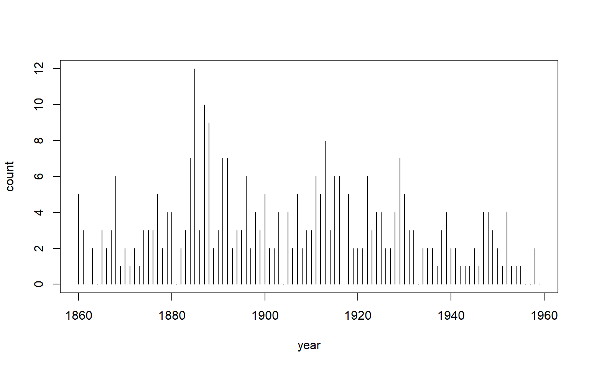
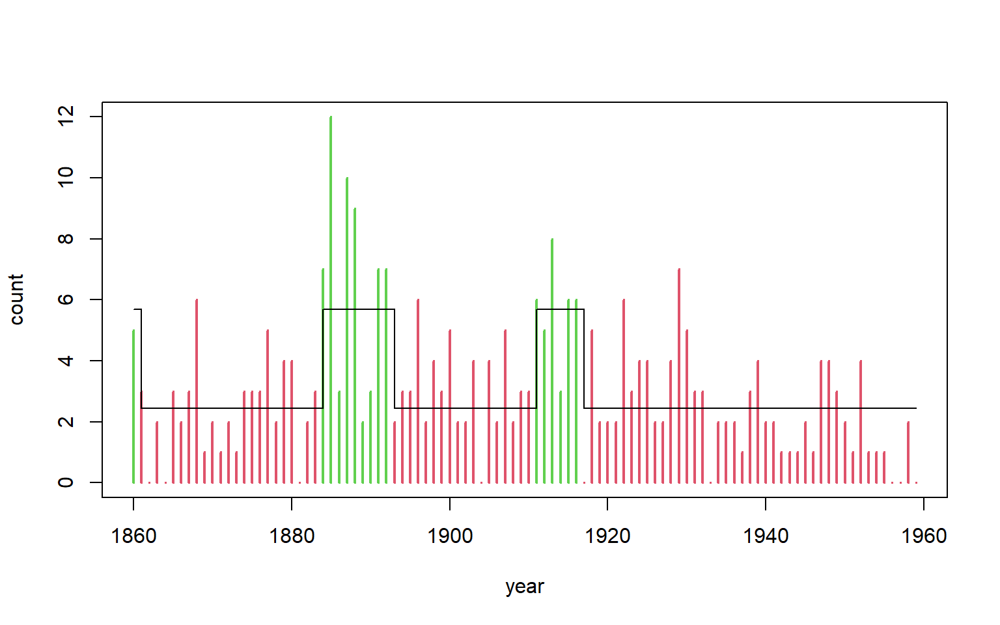
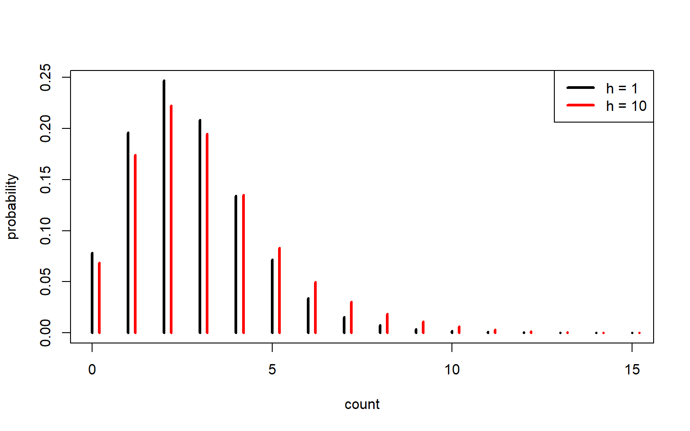

Code
x <- as.numeric(discoveries)
n <- length(x)
years <- as.numeric(time(discoveries))This section covers Part 2 - hidden Markov models (HMMs). They are the discrete-state case of the state space models in Chapter 7: the hidden state follows a first-order Markov chain and can take only a finite number of values. Because the state is discrete, the Kalman filter does not apply. Instead, the likelihood is found by summing over the state sequence with the forward algorithm. I write out that likelihood, fit one-, two- and three-state Poisson models to the discoveries counts, and compare them by AIC and BIC. I then decode the most likely states, check the two-state fit with depmixS4, and forecast the next state and count.
The key concepts in this section are as follows,
This section fits Poisson hidden Markov models to the annual counts of great discoveries from 1860 to 1959, which are built into R. I use these counts throughout, including for Question 8 of the tutorial, because the earthquake file was not available. The likelihood is computed with the forward algorithm, the models are fitted by maximum likelihood, and the states are decoded and forecast.
x <- as.numeric(discoveries)
n <- length(x)
years <- as.numeric(time(discoveries))plot(years, x, type = "h", xlab = "year", ylab = "count", main = "")
c(mean = mean(x), var = var(x)) mean var
3.100000 5.080808 The variance (5.08) is larger than the mean (3.10), so a single Poisson does not fit well. The counts may switch between a low and a high rate, which is what a hidden Markov model allows for.
The dependence structure of an HMM can be drawn as a directed acyclic graph. Arrows show what depends on what:
C1 ---> C2 ---> C3 ---> ... ---> CT hidden states: a Markov chain
| | | |
v v v v
X1 X2 X3 ... XT observationsTwo things can be read off the graph. The state \(C_t\) depends only on \(C_{t-1}\) (the Markov property), and given the states, the observations are independent, with \(X_t\) depending only on \(C_t\). The joint distribution is the product of each node given its parents:
\[ p(c_{1:T}, x_{1:T}) = \delta_{c_1} \prod_{t=2}^{T} \gamma_{c_{t-1} c_t} \prod_{t=1}^{T} p_{c_t}(x_t) \]
Summing this over all possible state sequences gives the likelihood. The matrix product \(\delta P(x_1)\Gamma P(x_2)\cdots\) does that sum efficiently.
I unpack the unconstrained parameter vector into \(\lambda\), \(\Gamma\) and the stationary \(\delta\), then compute the likelihood with the forward algorithm, scaled at every step as in the notes (the pois2.hmm.ll function). unpack is a helper for hmm_nll, and both are needed for Question 8.
unpack <- function(par, m) {
lambda <- exp(par[1:m])
Gamma <- matrix(1, m, m)
k <- m + 1
for (i in 1:m) {
for (j in 1:m) {
if (i != j) {
Gamma[i, j] <- exp(par[k])
k <- k + 1
}
}
}
Gamma <- Gamma / rowSums(Gamma)
# stationary distribution: solves delta (I - Gamma + 1) = 1
delta <- solve(t(diag(m) - Gamma + 1), rep(1, m))
list(lambda = lambda, Gamma = Gamma, delta = delta)
}
hmm_nll <- function(par, x, m) {
p <- unpack(par, m)
phi <- p$delta
ll <- 0
for (t in 1:length(x)) {
if (t == 1) {
v <- phi * dpois(x[t], p$lambda)
} else {
v <- (phi %*% p$Gamma) * dpois(x[t], p$lambda)
}
u <- sum(v)
ll <- ll + log(u)
phi <- v / u
}
-ll
}Question 8 asks for a two-state Poisson HMM fitted to earthquake counts. I fit one, two and three states to the discoveries counts instead, and compare them by AIC and BIC.
ll1 <- sum(dpois(x, mean(x), log = TRUE))
fit2 <- optim(c(log(2), log(4), -2, -2), hmm_nll, x = x, m = 2, control = list(maxit = 5000))
fit3 <- optim(c(log(1.5), log(3), log(5), rep(-2, 6)), hmm_nll, x = x, m = 3, control = list(maxit = 10000))
p2 <- unpack(fit2$par, 2)
p3 <- unpack(fit3$par, 3)k <- c(1, 4, 9) # m rates + m(m-1) transition probabilities
ll <- c(ll1, -fit2$value, -fit3$value)
ic <- data.frame(states = 1:3, k = k, logLik = round(ll, 2),
AIC = round(-2 * ll + 2 * k, 2), BIC = round(-2 * ll + log(n) * k, 2))
ic| states | k | logLik | AIC | BIC |
|---|---|---|---|---|
| 1 | 1 | -216.85 | 435.69 | 438.30 |
| 2 | 4 | -206.10 | 420.21 | 430.63 |
| 3 | 9 | -201.73 | 421.47 | 444.91 |
The one-state model has an AIC of 435.69 and a BIC of 438.30. Moving to two states lowers them to 420.21 and 430.63, so both criteria pick two states. The three-state model has the highest log-likelihood (-201.73), but its AIC rises to 421.47 and its BIC to 444.91, so the extra parameters do not pay for themselves. The AIC difference between two and three states is small (1.26), while the BIC difference is large, which fits BIC’s heavier penalty on extra parameters for a series of 100 observations.
The two-state fit from my own likelihood function gives a low rate of 2.50 and a high rate of 5.83. The probability of staying in the low state is 0.956 and in the high state 0.788.
library(depmixS4)
set.seed(1)
mod <- depmix(response = x ~ 1, data = data.frame(x = x), nstates = 2, family = poisson())
fm <- fit(mod, verbose = FALSE)converged at iteration 41 with logLik: -206.179 (fit_sum <- summary(fm))Initial state probabilities model
pr1 pr2
0 1
Transition matrix
toS1 toS2
fromS1 0.941 0.059
fromS2 0.276 0.724
Response parameters
Resp 1 : poisson
Re1.(Intercept)
St1 0.892
St2 1.738 Re1.(Intercept)
St1 0.892
St2 1.738logLik(fm)'log Lik.' -206.179 (df=5)-fit2$value[1] -206.1031exp(fit_sum[, 1]) # the two state rates St1 St2
2.440005 5.685960 The depmixS4 fit gives a low rate of 2.44 and a high rate of 5.69, with a log-likelihood of -206.179 against -206.103 from my code. The transition probabilities differ more, with a staying probability of 0.941 in the low state and 0.724 in the high state. The starting probabilities printed by depmixS4 are 0 for the low state and 1 for the high state, so it starts in the high state. My code uses the stationary distribution instead, which probably accounts for most of the difference.
The forward probabilities \(\alpha_t\) and backward probabilities \(\beta_t\) multiply to the same likelihood at every year \(t\). The values here are small (about 3.09e-90), but still well within the range of double precision, so the unscaled version works for 100 observations.
alpha <- matrix(0, n, 2)
beta <- matrix(0, n, 2)
alpha[1, ] <- p2$delta * dpois(x[1], p2$lambda)
for (t in 2:n) alpha[t, ] <- (alpha[t - 1, ] %*% p2$Gamma) * dpois(x[t], p2$lambda)
beta[n, ] <- 1
for (t in (n - 1):1) beta[t, ] <- p2$Gamma %*% (dpois(x[t + 1], p2$lambda) * beta[t + 1, ])
L <- sum(alpha[n, ])
c(L = L, from_likelihood_function = exp(-fit2$value)) L from_likelihood_function
3.094301e-90 3.094301e-90 range(rowSums(alpha * beta)) # the same L at every t[1] 3.094301e-90 3.094301e-90Local decoding picks the most likely state at each year on its own, from the posterior probabilities \(\alpha_t(i)\beta_t(i)/L\). Global decoding finds the most likely whole sequence, using the Viterbi algorithm in depmixS4.
post <- alpha * beta / L
local_states <- apply(post, 1, which.max)
viterbi_states <- posterior(fm, type = "viterbi")$state
table(local = local_states, viterbi = viterbi_states) viterbi
local 1 2
1 83 1
2 1 15rate_state <- exp(fit_sum[, 1])
plot(years, x, type = "h", col = viterbi_states + 1, lwd = 2, xlab = "year", ylab = "count", main = "")
lines(years, rate_state[viterbi_states], type = "s")
Local and global decoding agree in 98 of the 100 years, with 83 years in the low state under both and 15 in the high state under both. They disagree in the other two years. [Describe where the high-rate years fall, from the printed output of years[viterbi_states == 2].]
The h-step transition matrix is \(\Gamma^h\). As h grows, its rows approach the stationary distribution \(\delta\).
Gamma <- p2$Gamma
Reduce("%*%", rep(list(Gamma), 5)) [,1] [,2]
[1,] 0.8661448 0.1338552
[2,] 0.6392973 0.3607027Reduce("%*%", rep(list(Gamma), 50)) [,1] [,2]
[1,] 0.8268709 0.1731291
[2,] 0.8268706 0.1731294p2$delta[1] 0.8268709 0.1731291set.seed(1)
nsim <- 5000
ch <- numeric(nsim)
ch[1] <- sample(1:2, 1, prob = p2$delta)
for (t in 2:nsim) {
ch[t] <- sample(1:2, 1, prob = Gamma[ch[t - 1], ])
}
table(ch) / nsimch
1 2
0.833 0.167 1 / (1 - diag(Gamma)) # expected time in each state before leaving it[1] 22.498510 4.710709After 50 steps both rows of \(\Gamma^{50}\) are 0.827 and 0.173, matching \(\delta\). The simulated proportions are 0.833 and 0.167. The expected time before leaving the low state is 22.5 years, and before leaving the high state it is 4.7 years.
I start from the filtered state probabilities at the end, \(\alpha_T / L\), and multiply by \(\Gamma^h\) to forecast the state \(h\) years ahead. The forecast count is then a mixture of the two Poisson distributions, weighted by those state probabilities.
filtered_T <- alpha[n, ] / L
state_fc <- matrix(0, 10, 2)
for (h in 1:10) state_fc[h, ] <- filtered_T %*% Reduce("%*%", rep(list(Gamma), h))
colnames(state_fc) <- c("low", "high")
round(state_fc, 3) low high
[1,] 0.954 0.046
[2,] 0.921 0.079
[3,] 0.897 0.103
[4,] 0.879 0.121
[5,] 0.866 0.134
[6,] 0.856 0.144
[7,] 0.848 0.152
[8,] 0.843 0.157
[9,] 0.839 0.161
[10,] 0.836 0.164For 1960 (h = 1) the state probabilities are 0.954 low and 0.046 high. By h = 10 they have moved to 0.836 and 0.164, which is close to the stationary distribution.
k <- 0:15
d1 <- state_fc[1, 1] * dpois(k, p2$lambda[1]) + state_fc[1, 2] * dpois(k, p2$lambda[2])
d10 <- state_fc[10, 1] * dpois(k, p2$lambda[1]) + state_fc[10, 2] * dpois(k, p2$lambda[2])
plot(k, d1, type = "h", lwd = 3, xlab = "count", ylab = "probability", main = "")
points(k + 0.2, d10, type = "h", lwd = 3, col = "red")
legend("topright", c("h = 1", "h = 10"), col = c("black", "red"), lty = 1, lwd = 3)
cdf <- cumsum(d1)
c(mean = sum(k * d1), lower = k[which(cdf >= 0.025)[1]], upper = k[which(cdf >= 0.975)[1]]) mean lower upper
2.656305 0.000000 7.000000 fit2$convergence[1] 0fit3$convergence[1] 0p2$lambda
[1] 2.503926 5.830785
$Gamma
[,1] [,2]
[1,] 0.9555526 0.04444739
[2,] 0.2122823 0.78771771
$delta
[1] 0.8268709 0.1731291p3$lambda[1] 2.130969 3.674801 7.830237n[1] 100ic| states | k | logLik | AIC | BIC |
|---|---|---|---|---|
| 1 | 1 | -216.85 | 435.69 | 438.30 |
| 2 | 4 | -206.10 | 420.21 | 430.63 |
| 3 | 9 | -201.73 | 421.47 | 444.91 |
The one-year-ahead forecast for 1960 has a mean of 2.66 discoveries, with a 95% interval from 0 to 7.
This section I found both fun and very difficult at the same time. The math was very hard to follow and there was a lot of it. The key difference between HMM and SSM is that HMM have discrete state spaces, but the observations can still be continuous or discrete. The idea is similar to SSM, we are trying to use seen observations, which are a random realisation of an underlying process, although in this case that underlying process is a series of discrete states. The goal is to identify which state we are in. The state is hidden and unobserved, we only observe the data.
The coin-toss transition diagram and the transition probability matrix were easy to follow, because they are close to the state space models I had just worked through. The harder part was seeing the joint probability as a product of conditionals, and then how a dependent mixture turns into a likelihood, which I first met with one observation and then with two. The tutorial did not say which exercise to use for the mini-project, so I chose Question 8 and used the discoveries counts, and that choice is why this chapter is built around them.
The hidden states follow a first-order Markov chain, with the transition matrix \(\Gamma\) giving the probability of moving between them and \(\delta\) the starting distribution. Each state has its own Poisson rate, which lets the counts switch between a low and a high level.
The forward algorithm builds the likelihood one year at a time. The values shrink quickly, so I rescale at each step and sum the logs to avoid underflow. I optimise on transformed parameters (\(\log \lambda\) and the logged off-diagonals of \(\Gamma\)) so that the rates stay positive and the rows of \(\Gamma\) still sum to one.
Local decoding picks the most likely state at each year separately. Global decoding, the Viterbi algorithm, finds the most likely whole path. The DAG shows that each state depends only on the one before it, and each count depends only on its own state. An independent mixture draws each year separately, whereas an HMM lets the rate persist from year to year.
The forward and backward probabilities multiply to the same likelihood at every year. To forecast, I take the filtered state probabilities at the end, multiply by \(\Gamma^h\), and mix the two Poissons using those probabilities.
An HMM suits a problem when the counts are overdispersed, the states persist, and the decoded periods make sense. Choosing the number of states comes down to AIC and BIC, and whether the extra state is visited often enough to mean anything. [Add the part you found hardest.] Starting values matter because the likelihood has several local maxima, so I tried more than one.